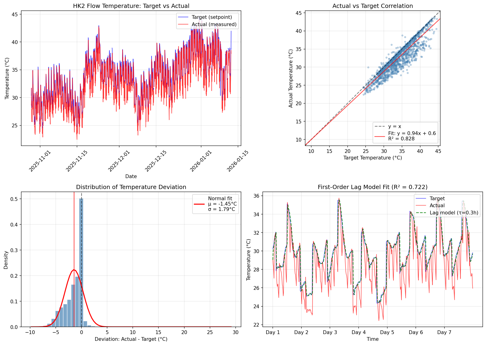

This analysis examines the relationship between the HK2 target temperature
(heating curve setpoint, controllable) and actual temperature (measured flow).
Understanding this relationship is critical because:
The thermal model uses actual HK2 as the heating input signal
Optimization controls target HK2 via setpoint and curve_rise parameters
A gap between target and actual affects model predictions
Deviation Statistics
Analysis of the difference: $\Delta T = T_{actual} - T_{target}$
Statistic
Value
Number of observations
6,097
Mean deviation ($\bar{\Delta T}$)
-1.45°C
Std deviation ($\sigma_{\Delta T}$)
1.79°C
Min deviation
-9.8°C
Max deviation
29.1°C
Actual above target
14.8%
Within ±1°C
52.6%
Within ±2°C
69.7%
Correlation ($r$)
0.910
First-Order Lag Model
We fit a first-order lag model to characterize the dynamics:
where $\tau$ is the time constant (how quickly actual approaches target).
Model Parameter
Value
Time constant ($\tau$)
0.35 hours
Forward simulation $R^2$
0.722
Forward simulation RMSE
2.25°C
One-step prediction $R^2$
0.813
One-step prediction RMSE
1.84°C
Interpretation: A time constant of τ = 0.3 hours means the actual
temperature reaches ~63% of a step change in target within 0.3 hours, and ~95% within
1.0 hours (3τ).
Cross-Correlation Analysis
Metric
Value
Peak correlation
0.914
Peak lag
-0.25 hours
Zero-lag correlation
0.910
Recommendation: The lag model achieves moderate fit (R² = 0.722).
Consider using actual HK2 temperature directly in thermal models rather than predicting
from target. The dynamics may involve factors beyond simple first-order lag.
Implications for Thermal Modeling
Transfer function model: Currently uses actual HK2 ($T_{actual}$) as input.
This is appropriate since it reflects real heat delivery.
Grey-box model: Uses target HK2 ($T_{target}$) as input.
The mismatch between target and actual may explain forward simulation divergence.
Optimization: Changes to setpoint/curve_rise affect target immediately
but take ~0 hours to fully propagate to actual flow temperature.

Figure 17: HK2 target vs actual temperature analysis:
time series (top-left), scatter correlation (top-right), deviation distribution (bottom-left),
lag model fit (bottom-right).